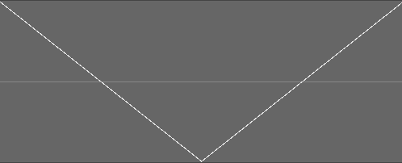

Meaning it has everything found in UltraBox 2.2.13 feel free to look on the BeepBox wiki for everything that is in UltraBox right here.
max of 1000BPM tempo and -8 and +8 octave options. High quality versions of some chipwaves ( Rounded, Triangle and Sawtooth ) along side some of my own (trapasquare) and my own custom theme (LemmBeep dark)
All of the unisons in midbox. That's right, all of them.
The order of some chipwaves as I was informed that adding new ones can cause some general issues. Along side that, I need to fix some of the HD chipwaves to stop them from popping / clicking since the waves (such as HD triangle) start at the top instead of the propper area. Image for reference
